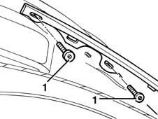
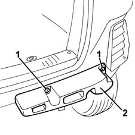

7055B18 Rear BUMPER - R.R.
- Path
- Procedures > 70 FITTINGS > 7055 MOULDINGS ON PROTECTIONS > 7055B EXTERIOR PROTECTIONS > 7055B18 Rear BUMPER - R.R.
- Kind
- repair procedure (removal / refitting; the operation number is the code)
- Applies to
- all engines; all production periods
- Interactive page
- https://sloeber94.github.io/elrnDB-fMltpl/en/#/2892264
Applies to: all engines; all production periods
 Removing
Removing
 Refitting
Refitting7055B43 REAR WHEEL ARCH liner (one), left or right - R.R. (right and left)
1. Working from both sides of the car, undo the bumper's side bolts.

Applies to: all engines; all production periods
1. Open the tailgate and undo the top and bottom bolts.
2. Remove the bumper.
Applies to: all engines; all production periods
1. If necessary, undo the bolts securing the buffers.
2. Remove the buffers.

Applies to: all engines; all production periods
Refitting
RemovingIf removed, fit the buffers and tighten their bolts.
Check that the bumper is undamaged.
Fit the front bumper.
Tighten the bumper's top and bottom bolts.
Tighten the bumper's side bolts.
7055B43 REAR WHEEL ARCH liner (one), left or right - R.R. (right and left)